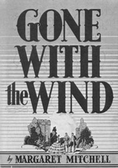
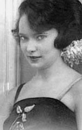
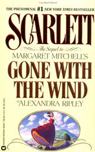

|
It is possible to imagine a time when Gone with the
Wind ceases to be a fixture in the firmament of U.S.
popular culture. At the end of the twentieth century,
however, such a fate does not appear imminent. Uncle
Tom's Cabin, the most widely read novel of the
nineteenth century, remained the supreme work of popular
culture in the United States before becoming a relic over
the course of the last hundred years, albeit one finding new
life in the academy in recent decades. By contrast,
GWTW (as it is commonly abbreviated) seems to be
growing more ubiquitous. The rise of the paperback and the
advent of home video have made it possible to pick up the
book or movie along with a loaf of bread at the supermarket,
and the 1991 publication of Alexandra Ripley's Scarlett:
The Sequel to Margaret Mitchell's Gone with the
Wind--followed by a paperback edition and a television
miniseries--virtually ensured an ongoing interest in the
original saga. If a shared national culture can be said to
exist, GWTW would have to be at the heart of it.
Some numbers alone tell a vivid story. An instant
best-seller upon publication in June 1936, the novel sold
50,000 copies in one day, a million--at $3 a copy during the
middle of the Great Depression--within six months, and an
average of 3,700 copies a day for the rest of the year. At
|

The cover of Gone
With the Wind as it appeared in its
original printing.
|
least 28 million have been sold since then. The novel has
continued to sell roughly 40,000 copies a year, except in
years such as 1986 (the book's fiftieth anniversary) and
1991 (the year of the sequel), when it returned to the
New York Times hardcover best-seller lists. It has
been estimated that 90 percent of the U.S. population have
seen the movie at least once, and countless people have seen
it worldwide.
Indeed, GWTW has become an icon of U.S. Culture.
During the Second World War, the book was banned by the
Nazis and was prized by the French Resistance as a symbol of
resilience amid occupation. During the trial of China's Gang
of Four, it was charged that the book was held up as an
example of "people's literature" to be studied instead of
Western classics during the Cultural Revolution. The movie
was one of two films (the other was King Kong)
requested by the Hanoi government as part of a
friendship-building cultural exchange after the Vietnam War.
In Japan, GWTW has been adapted into a long-running
all-female musical. In 1990, the movie made its premiere,
after fifty-one years, in Moscow. Media magnate Ted Turner,
who had bought the rights to the movie, told the
economically ravaged audience, "I know the Soviet Union and
the Soviet people can do like Scarlett O'Hara did after the
war and build everything better than before."
It seems that in the decades following its appearance,
about the only people besides the Soviets unfamiliar with
GWTW were U.S. literary critics. The novel was not
mentioned in standard histories such as Modern American
Fiction: Essays in Criticism or even a book such as
American Historical Fiction. Other books, such as
Edmund Wilson's Patriotic Gore, mention it only in
passing and disparagingly.
To be fair, record-breaking sales do not a classic make,
though they indicate the presence of something worth
studying other than accounting records. In any case,
literary interest in the novel has grown considerably since
the 1970s (earning an entry, for example, in The
Dictionary of Cultural Literacy). This interest
resurfaces as the New Criticism canon erodes and the
influence of disciplines such as feminist theory and
criticism grows.
Nonetheless, if GWTW has received more attention
in literature of late, it continues to be overlooked as a
work of history. Yet even those who have trouble accepting
the novel on this basis would agree that it is a document of
its time. To examine why this is so, however, an important
distinction must be made about a matter that has been thus
far glossed over: GWTW exists in two different
versions.
For most people, GWTW is a movie starring Clark
Gable and Vivien Leigh. Many of those who have seen the
movie are aware that GWTW was first a novel by
Margaret Mitchell; relatively few (when one considers that
the television premiere of the movie alone drew 110 million
viewers) have actually read the book. In many ways, the
novel and the movie are in accord. At the same time,
however, the technical and cultural demands of the cinematic
form required much of the novel to be compressed or omitted.
These changes are highly revealing in what they show about
both Mitchell and the Hollywood culture that interpreted her
work for a cinematic audience.
In this essay I am trying to accomplish three separate,
but interrelated, tasks. The first is to explore Margaret
Mitchell's interpretation of the Civil War in her novel and
how it reflected her highly specific milieu as a Southern,
white, Upper-middle-class woman in the 1920s, when most of
the book was written. For Mitchell, Gone with the
Wind was a romance of the South.
Certainly, this is an important way of understanding her
novel, and it will be central in the biographical sketch
that follows. However, there are other ways of looking at
the book as well, ways that illustrate how intimately
Mitchell's understanding of the war was connected with the
cultural currents of the South in the interwar years. I have
picked three themes that were important in her time as well
as ours: race, class, and gender. The ensuing sections of
this chapter will examine the text of the novel more closely
to see how Mitchell handles them in her depiction of the
days before the Civil War, what happened during it, and the
events in the years that followed.
My second objective is to compare Mitchell's vision of
the war with that of the movie, using the same three themes.
If Mitchell's GWTW has an avowedly particular view of
the war, producer David Selznick and his collaborators
sought a more accessible, general GWTW that would
appeal to a broad national (and even international)
audience. In one sense, the powerful, lasting appeal of the
film suggests that Selznick succeeded. But in another sense,
the film version of GWTW is no less a document of its
time, reflecting cultural tendencies of the late 1930s and
long afterward.
Third, I conclude the essay with a brief look at the
recently published sequel. The popularity of this
sequel--despite criticism of it--leaves room for speculation
on the reason for the saga's ongoing popularity and
relevance.
A Little Woman Who Wrote a Big Book
It makes me very happy to know that Gone with the
Wind is helping refute the impression of the South which
people abroad gained from Mrs. Stowe's book. Here in America
Uncle Tom's Cabin has been long forgotten and there
are few people today who have read it. They only know it as
the name of a book which had a good deal to do with the
bitterness of the Abolition movement.
--Margaret Mitchell to a fan in Berlin, 1938
As I have discussed, Uncle Tom's Cabin was the
major work of popular culture in the nineteenth century,
disseminating a critical depiction of Southern culture that
continued to haunt the region in the decades following the
Civil War. No work came close to dislodging Harriet Beecher
Stowe's hold on the popular imagination until the turn of
the century, when Thomas Dixon's Leopard's Spots
(1903) and The Clansman (1905) became best-sellers,
later to burst into lasting notoriety as the basis for D.W.
Griffith's Birth of a Nation (1915).
It took another "damned female scribbler," in the words
of Nathaniel Hawthorne, to replace Stowe's moral indictment
with a new master narrative of the Civil War. In some ways,
that novel distilled the cultural project Dixon had come to
symbolize. His effect on a developing mind can be vividly
illustrated in a letter written to Dixon after he had
written an admiring note to the new novelist. "I was
practically raised on your books, and love them very much,"
Mitchell wrote, noting that a neighborhood enactment of
Dixon's play The Traitor: A Story of the Fall of the
Invisible Empire (1907) had provided her with a lasting
childhood memory:
The clansmen were recruited from the small-fry of the
neighborhood, their ages ranging from five to eight. They
were dressed in the shirts of their fathers, with the shirt
tails bobbed off. I had my troubles with the clansmen, as,
after Act 2, they went on strike, demanding a ten cent wage
instead of a five cent one. Then, too, just as I was about
to be hanged, two of the clansmen had to go to the bathroom,
necessitating a dreadful stage wait which made the audience
scream with delight, but which mortified me intensely. My
mother was out of town at the time.
Despite--or because of--Mitchell's humor, it is
instructive to read about a group of young children staging
a lynching. Although there can be no doubt that children
today engage in equally macabre forms of play when their
mothers are not around, it is unlikely that lynching is the
chosen format, for it belongs to another time and place,
part of the long foreground of GWTW. If GWTW
were nothing more than a distillation of the anti-Tom
|

Margaret Mitchell.
|
tradition, it would have long since passed into a twilight
zone that Dixon--and, for that matter, D. W.
Griffith--inhabits, a zone scholars enter for background to
write essays on the origins of forms, themes, and ideas we
now find familiar when expressed by more well-known people.
Though much of the novel is a familiar distillation of old
ideas, particularly in terms of racial politics that may
change form if not content, there must be something else at
work that keeps GWTW the kind of story that people
without undergraduate degrees or postdoctoral fellowships
(and some that have college degrees, as well) read or watch
in their leisure time. Generally speaking, popular culture
is a complex mixture of confirmed and challenged beliefs,
familiar and subverted formulas; GWTW is no
exception. We can begin to understand this mix by looking at
the life of the diminutive woman (she was less than five
feet tall) who wrote this very big book.
Debutante, journalist, housewife, novelist, Margaret
Munnerlyn Mitchell was born on November 8, 1900, in Atlanta,
Georgia. Her family's roots in the South date back to the
seventeenth century. Her maternal grandparents refused to
leave the city when Union general William Tecumseh Sherman's
troops entered Atlanta, and their home was used as an army
hospital. Images of the war were vividly transmitted to
Mitchell as a child when family and friends--many of them
veterans--recalled their experiences. Later, she wryly
described those memories: "I heard about the fighting and
the wounds and the primitive way they were treated--how
ladies nursed in hospitals, the way gangrene smelled, what
substitutes were used for food and clothing when the
blockade got too tight for these necessities to be brought
from abroad. I heard about the burning and looting of
Atlanta and the way the refugees crowded the roads and
trains to Macon. I heard about everything in the world
except that the Confederates lost the war."
Mitchell's father, Eugene, was an attorney who lost a
great deal of money in the depression of 1893, and he
henceforth regarded maintaining the family's
upper-middle-class standard of living as a struggle.
According to his son Stephens Mitchell, the depression took
from his father "all daring and put in its place a desire to
have a competence assured to him."
Mitchell's mother, May Belle, seems to have been a
pivotal figure in her daughter's life; an ambivalence toward
mothers and motherhood suffuses GWTW. A
convent-educated Irish Catholic, May Belle Mitchell was also
president of Atlanta's most militant suffrage group. Her
political commitments were matched by a sense of social and
familial duty, which she sought to transmit to her daughter.
The duality between feminist self-assertion and traditional
self-abnegation became a crucial tension in the novelist's
life and work.
After attending a private school for girls in Atlanta,
Mitchell was accepted at Smith College for the fall of 1918.
That summer, as the United States sent soldiers to fight in
the First World War, she socialized with young men based at
nearby Fort McPherson, and she became engaged to a
Connecticut poet/soldier before he went overseas. His death
in France was the first shock she had to endure in
Northampton; the second was the death of her mother, a
victim of the worldwide influenza epidemic. Mitchell left
Smith in the spring of 1919 a popular and vivacious though
not intellectually distinguished student, never to resume
her studies.
Eugene Mitchell was shattered by the death of his wife,
and his daughter's return to Atlanta represented her
ascension to adult responsibility for her father and the
family household. At the same time, however, she submitted
to pressure from him and her maternal grandmother to make a
formal debut in Atlanta society so as not to ruin her
marital chances. She was approved for membership in the
city's elite Debutante Club for the 1920-21 season and was
poised to enter proper Atlanta society.
But not quite. Although Mitchell quickly made friends
with other debutantes and attended a whirl of parties at
country clubs, she showed signs of rebelling against the
role into which she was being cast. Some of these signs
suggest a lingering tomboy style. Others, Such as Mitchell's
smoking and occasional drinking, reflect an adoption of a
flapper persona. She also attended a ball with a
Valentino-styled escort, wore a suggestive Apache costume,
and danced with shrieks of simulated passion. In response,
Mitchell was pointedly overlooked when it came time to
invite debutantes to join the Junior League, the symbol of
social distinction of Atlanta society. (She later exacted
revenge when she pointedly declined to attend the Junior
League ball held to celebrate the world premiere of the
movie Gone with the Wind. )
The conflicting tensions in Mitchell's life coalesced in
her relationship with a man who haunted her the rest of her
life: Berrien "Red" Upshaw. Upshaw came from a respectable
Georgia family, but there was an air of scandal about him.
He twice "voluntarily resigned" from the U.S. Naval Academy
in Annapolis, and after his parents cut him off financially,
he was apparently able to support himself at the University
of Georgia by bootlegging. Despite vigorous opposition from
her family and friends, the two married in 1922.
Upshaw's best man was his roommate John Marsh, a quiet,
retiring, World War I veteran who stood in sharp contrast to
his rakish friend. Marsh had also made an unassuming bid for
Mitchell's affections, but after her engagement to Upshaw,
he accepted a role as trusted friend to bride and groom.
When the marriage got off to a rocky start on the honeymoon
and remained tense after the couple decided to live in her
father's house, Marsh served as a middleman arranging for
conciliation. After fights over money, Upshaw's drinking,
and his lack of a steady job, the two agreed to a divorce,
and Upshaw abruptly left Mitchell. Occasionally he returned:
most notably a few months later, when he found Mitchell
alone in her house and assaulted her so brutally that she
required weeks to recover. Upshaw died after leaping from a
fifth-story window of a Texas hotel in 1949, seven months
before Mitchell's own death.
In the months following the failure of her marriage,
Mitchell and Marsh grew increasingly close. Lacking
financial support from Upshaw, and reluctant to depend on
her father, Mitchell landed a job, possibly through family
connections, at the Atlanta Journal as a feature
writer for the paper's Sunday magazine. Between 1922 and
1926 she wrote 129 signed articles, ranging from an
interview with Rudolph Valentino to a series on Georgia's
Confederate generals. In 1925 she married Marsh and left her
father's home for an apartment in downtown Atlanta.
It was around this time, at Marsh's urging, that she
began focusing on fiction writing. Injuries and ailments of
the kind that plagued her and Marsh for the rest of their
lives led her to quit the paper, and Marsh's job as a
publicist for the Georgia Power Company provided some
financial stability. Mitchell had long been a short-story
writer, but during the mid-1920s she wrote her first major
work, a novella about a decaying Southern family (it has
since been lost). She also began Gone with the Wind.
Many observers of Margaret Mitchell's development note
her Southern background, flapper youth, and journalistic
experience. Fewer have noted that Mitchell began writing
GWTW at the very moment that the Southern literary
renaissance burst into full flower. In the late 1920s and
early 1930s, a brilliant array of writers gained national
attention--and judging from Mitchell's later correspondence,
Mitchell's attention as well. Robert Penn Warren, Alan Tate,
Stark Young, and, of course, William Faulkner all arrived on
the scene, crisscrossing poetry, fiction, criticism, and
history. Nor were all these literary lights men. Evelyn
Scott's book The Wave (1929) brought modernist
experimentation to the Civil War novel, and Frances Newman
gained attention with witty, epigrammatic novels such as
The Hard-Boiled Virgin (1926) and Dead Lovers Are
Faithful Lovers (1928). At the same time, slightly older
figures such as James Branch Cabell and Ellen Glasgow served
as intellectual godparents for these new arrivals, and other
mavericks such as W. J. Cash and Lillian Smith were not far
behind.
Mitchell held her own ambitions firmly in check for quite
some time. She had essentially written a draft of
GWTW by 1929, and although family and friends were
aware she was doing something at home, no one was aware of
the scope of her work (she kept her typewriter and
manuscript covered with a bath towel and called her writing
"therapy for my leg"). In 1935 a friend in publishing told
Macmillan editor Harold Latham, who was going South to scout
for talent, about Mitchell's novel; he sought her out but
was persistently refused a look at the manuscript. It was
only when an acquaintance expressed surprise that she was
"the type who would write a novel" and suggested she "lacked
the seriousness necessary to be a novelist" that an
indignant Mitchell chased down Latham and gave him a copy of
the manuscript just as he was about to leave the city.
This, of course, set off a chain of events that made
Mitchell a literary giant, even though she never wrote
another book. She also became sickly, defensive, and
fanatical about protecting her foreign rights until she was
hit by a car and killed in 1949. GWTW became the
best-selling novel in U.S. history and set off a scramble
for the rights and roles for a movie. David Selznick of
Selznick International emerged the master of this melee,
paying $50,000 to Mitchell for movie rights--the highest sum
paid any novelist, and one of the best investments in film
history--and spending the next three years choreographing
the project in his inimitable (if overbearing) style. When
he finished, the parochial vision of one Southern woman
completed its transformation from an impressively popular
work of regionalism to a massively popular, worldwide symbol
of U.S. Culture.
Color Lines
Freedom became a never-ending picnic, a barbecue every
day of the week, a carnival of idleness and theft and
insolence. Country negroes flocked into the cities, leaving
the rural districts without labor to make the crops. Atlanta
was crowded with them and still they came by the hundreds,
lazy and dangerous as a result of the new doctrines being
taught them. Packed into squalid cabins, smallpox, typhoid
and tuberculosis broke out among them ... Relying upon their
masters in the old days to care for their aged and their
babies, they now had no sense of responsibility for their
helpless. And the [Freedmen's] Bureau was far too interested
in political matters to provide the care plantation owners
had once given.
--Gone with the Wind, p. 655
The question of audience confronts every writer, and
generally speaking, the most successful ones have a clear
sense for whom they are writing. Margaret Mitchell was no
exception. Although she often expressed gratitude for her
global audience, she wrote first and foremost for white
Southerners: not all white Southerners, but those she
considered everyday, ordinary Southerners, the kind who
wrote her letters telling her how much they liked the book
and to whom she wrote back replies by the thousands. Though
Mitchell was flattered by the seriousness with which
GWTW was regarded by reviewers (to whom she also
wrote grateful letters), she seemed neither surprised nor
troubled by those intellectuals, particularly leftists, who
challenged her portrait of the Old South. "I would be hurt
and mortified if the Left Wingers liked the book," she wrote
in a 1936 letter to Stark Young, whose novel So Red the
Rose (1934) she greatly admired. "I'd have to do so much
explaining to family and friends if the aesthetes and
radicals liked it.
Mitchell was modest, even self-deprecating, about her
work, but she had very clear standards by which to measure
herself. She sought to write a book "with precious little
obscenity in it, no adultery, and not a single degenerate."
She saw herself as lacking literary style but liked to
consider that an asset; indeed, there is a clarity to her
prose that suggests careful pruning.
Above all, Mitchell wanted her book to be accurate. Like
Carl Sandburg, who was at this time toiling away at
Abraham Lincoln: The War Years, Mitchell was a
prodigious researcher who carefully confirmed her facts as
she revised the novel in the 1930s. "I knew the history in
my tale was as watertight and air proof as ten years of
study and a lifetime of listening to participants would make
it," she wrote to Henry Steele Commager after the
historian's positive review in the New York Herald
Tribune. From the slightest of variations of dialect
between her African American characters to the actual
weather during the siege of Atlanta, she painstakingly
strove to recreate the past by means of total immersion in
her sources. The irony is that like Sandburg, she took the
facts and used them to make myth. She was writing fiction
and Sandburg was writing nonfiction; she was a Southerner
and he was a Northerner; he was in many ways progressive
while she was in many ways reactionary. Still, the two
provide case studies not only of the documentary impulse of
the 1930s in action, but also the way in which that
presumably "objective" sensibility could be used in highly
charged ways.
The most charged aspect of Mitchell's vision concerned
race. "I do not need to tell you how I and all my folks feel
about Negroes," she wrote in a 1939 letter to a friend in
Hollywood who had been hired as a historical consultant for
the movie. "I had and have no intention of insulting the
race." She went on to explain what presumably needed no
explaining: "We've always fought for colored education, and,
even when John and I were at our worst financially, we were
helping keep colored children in schools, furnishing clothes
and carfare, and oh, the terrible hours when I had to help
with homework which dealt in fractions. I have paid for
medical care and done the nursing myself on many occasions;
all of us have fought in the law courts and paid fines.
Well, you know what I mean, you and your people have done
the same thing."
In the context of the white Southern intellectual
community, Mitchell was more liberal than many of her peers
and said she found "Professional Southerners" as irritating
as "Professional Negroes." On one level, she was undoubtedly
sincere when she claimed her relations with the African
American community were good. And why not? The able
assistance of her various cooks, housekeepers, and
laundresses hired over the course of the 1920s and 1930s
gave her the free time necessary to write GWTW.
Fundamentally, however, her novel betrays not only a strong
streak of paternalistic condescension, but also an overt
sense of hostility that at times became visceral.
One glimpses this hostility in the offhand descriptions
of Mitchell's African American characters, even those she
considers "good." In many cases, she engages in an inverted
anthropomorphism, whereby human beings are described as
animals. Although she does this with white characters, too
(see the description of the Wilkeses as horses in the next
section, as one of a number of such examples), there is a
more malignant resonance in her descriptions of blacks.
Hence lines such as "Jeems was their [the Tarleton Twins']
body servant, and, like the dogs, accompanied them
everywhere" (p. 10). When Scarlett runs into Big Sam, the
former overseer at Tara, his "huge black paws" embrace his
mistress, and he and his comrades "caper ... with delight"
at being able to show off their master (p. 307). And when
Scarlett ventures into Shantytown, her attacker is "a Squat
black negro with shoulders and chest like a gorilla" (p.
787).
Nor is this creation of a biological hierarchy limited to
men. Mammy, presumably one of the most positive characters
in the novel, is described as having "the uncomprehending
sadness of a monkey's face" (p. 415), and at the end of the

Hattie McDaniel as
Mammy.
|
book, her face is puckered "in the sad devilment of an old
ape" (p. 991). The most dignified slave in the book is
Dilcey, whose "Indian blood was plain in her features,
overbalancing the negroid characteristics" (p. 62). Mammy,
by contrast, is "pure African" (p. 23)--a detail that also
informs the reader that there is no messy miscegenation
involved here.
Within the structure of Mitchell's fictional world,
Mammy's blackness is more important than her gender.
Although her very name and "broad bosom" (p. 1037) signify
motherhood, her African fallibility takes over at crucial
moments in the text, Such as her ineffectuality at Tara
after the fall of Atlanta or her departure from Scarlett at
the end of the book. Perhaps the best example of this
weakness is revealed a little earlier, when she tearfully
confesses to Rhett that she is responsible for his daughter
Bonnie's fear of the dark. "Ah tells her dar's ghos'es an'
buggerboos in de dahk," she explains (p. 996). One imagines
we are to believe that the "natural" superstitiousness of
African Americans makes Mammy's ghost story all the more
compelling to a young child. Even Mammy's otherwise
considerable maternal wisdom is explained more in terms of
race than gender. The reader is told that unlike Scarlett's
biological mother, Ellen, Mammy is "under no illusions"
about her calculating "chile" (p. 59); the reason for this
seems to be the same "unerring African instinct" that allows
the field hands to accurately measure the warmth behind
Gerald O'Hara's bluster and thus take "shameless advantage
of him" (p. 51).
Similarly, Mammy's race seems to disqualify her from any
kind of sexuality. She mothers without giving birth, runs a
household without being married. The only person remotely
able to see her as a woman is Rhett, who brings her back a
stiff red petticoat after his honeymoon with Scarlett--and
playfully demands to see it when her skepticism of him
finally breaks down and she wears it. Indeed, Rhett's
respect for her seems to transcend both race and gender
(though it is hard to imagine him interacting with her as a
potential marriage partner or even as a social equal). Such
exceptions remind one that the racial order of Gone with
the Wind is not completely airtight. It also reminds one
that this order is complicated: Mammy is clearly in a class
by herself, and Mitchell went to great pains to allude to
the subtle gradations between house slaves and field hands;
coastal slaves from large plantations and up-country slaves
with slightly different accents; country slaves such as
Mammy and city ones such as Miss Pittypat's Uncle Peter.
Nevertheless, these details are drawn on a canvas that
includes plenty of broad, condescending strokes. "Negroes
were provoking sometimes and stupid and lazy," thinks
Scarlett, "but there was loyalty in them that money couldn't
buy" (p. 472). Mitchell also drew on the moral authority of
Melanie, the epitome of virtue in the novel, to assert the
benevolence of the slave order. "All this talk about the
militia staying here to keep the darkies from rising,"
Melanie says during the Confederate high tide of 1862. "Why,
it's the silliest thing I ever heard of. Why should our
people rise?" (p. 177).
There is a striking duality in the commonly used Southern
phrase "our people," which here implies a familial sense of
closeness--and a sense of property ownership. The Civil War
wrought the destruction of at least the literal "Our," and
there is a rich vein of writings, notably those of Mary
Boykin Chesnut, that vividly evoke the responses that result
from this revolution in the social order.
Mitchell's protagonist Scarlett O'Hara becomes a
compendium of responses to this revolution during and after
the war. One response was exasperation. Amid the lies and
failures of her slave Prissy during Melanie's childbirth and
the siege of Atlanta, Scarlett declares, "And the Yankees
wanted to free the negroes! Well, the Yankees were welcome
to them" (p. 371). Another response to the new order was
denial: "It did not enter Scarlett's mind that he [Sam] was
free. He still belonged to her, like Pork and Mammy and
Peter and Cookie and Prissy. He was still 'one of our
family' and, as such, must be protected" (pp. 782-83). Nor
is Scarlett the only one indulging in such fantasies. The
only time Mammy mentions she is free is when she insists on
accompanying Scarlett on her schemes to marry Frank Kennedy
or is speaking her mind regarding Scarlett's marriage to
Rhett--in effect, asserting her freedom to keep on serving
her "former" mistress.
In addition to frustration and denial was another
response: fury. Walking the streets of Atlanta after the
war, Scarlett fumes that she would like to have all the
"insolent" negroes "whipped until the blood ran down their
backs. What devils the Yankees were to set them free, free
to Jeer at white people!" (p. 589). At times, such thoughts
lead to action. During the siege of the city, for example,
Scarlett slaps Prissy, striking a slave for the first time
in her life. In this case, at least, the identification
between author and character is clear. "When Scarlett
slapped her, it was really Margaret Mitchell yielding to an
overwhelming urge," Mitchell wrote to an Alabama reader in
1936. Indeed, one could argue that the very creation of
Prissy was an assault on African Americans--so powerfully
humiliating a character was she that the young Malcolm X,
viewing the movie in small-town Michigan, "felt like
crawling under the rug" as he was watching her.
Violence is the particular province of the Ku Klux Klan.
As the narrator explains in a chapter that outlines the
outrages of Reconstruction, "The negroes were on top and
behind them were the Yankee bayonets. She could be killed,
she could be raped and, very probably, nothing would ever be
done about it" (p. 648). Under such circumstances, Scarlett,
who has generally been indifferent or irritated by the war
and its consequences, "fell to trembling and, for the first
time in her life ... saw clearly that Scarlett O'Hara,
frightened and helpless, was not all that mattered. There
were thousands of women like her, all over the South, who
were frightened and helpless. And thousands of men, who had
laid down their arms at Appomattox, had taken them up again
and stood ready to risk their necks on a minute's notice to
protect those women" (p. 648).
Scarlett's itch for money and control of her lumber mill
ultimately overrides this fear and sisterhood, and she makes
an unaccompanied ride through Shantytown. She pays for this
transgression by being stopped by a white man, who orders a
black man to attack her--a perfect allegory of the white
Southern belief that Northerners controlled new freedmen.
Only the arrival of the faithful Big Sam on the scene a
moment later saves her. Unhurt but shaken, she is appalled
when her husband Frank leaves her to go to "a political
meeting." When Scarlett later learns that the "political
meeting" is really a Klan ride, she is fearful:
"The Klan!" she almost screamed it. "Ashley isn't in the
Klan! Frank can't be! Oh, he promised me!"
"Of course, Mr. Kennedy is in the Klan and Ashley, too,
and all the men we know," cried [Ashley's sister] India.
"They are men, aren't they? And white men and Southerners.
You should have been proud of him instead of making him
sneak out as though it were something shameful." (p. 798)
Even Rhett, who is hardly India's idea of a gentleman,
performs violence in the name of white womanhood. After
being released from jail on murder and other charges, he
confirms a widely held Suspicion: "I did kill [a] nigger. He
was uppity to a lady, and what else could a Southern
gentleman do?" (p. 623).
In the final analysis, however, neither Scarlett nor
Rhett approves of the Klan, although the reason for this has
nothing to do with morality. Scarlett sees the Klan as bad
for business and likely to harden Yankee occupation, and
Rhett agrees. At the end of the book, he tells Scarlett that
he and Ashley joined forces to disband it. He explains, "We
decided that it did more harm than good because it just kept
the Yankees stirred up and furnished more grist for the
slander mill of his excellency, [Occupation] Governor
Bullock. He knows he can stay in power just so long as he
can convince the Federal government and the Yankee
newspapers that Georgia is seething with rebellion and
there's a Klansman hiding behind every bush ... But he's
shooting at a nonexistent target and he knows it" (p. 981).
Whatever may have become of the Klan in the 1870s and
1880s, it was very much on the rise during World War I and
the 1920s, sparked at least to some extent by the phenomenal
popularity of Birth of a Nation. Atlanta at this time
was "the imperial city of the Invisible Empire," which ran a
national office literally down the road from where Mitchell
lived. In 1923, Georgia's governor, one of its senators, and
a state supreme court judge had Klan ties; so did Atlanta's
mayor. In addition to espousing antiblack views, the Klan by
this point was also strongly anti-ethnic and anti-Catholic.
Mitchell had rejected her mother's religion, but like
Judaism--which the Klan also attacked--Catholicism tended to
he an identity to which one was born, an ineradicable stain.
Nevertheless, Mitchell's opinion of the organization
remained positive. As she explained to a Minnesota reader of
her novel:
One of the earliest purposes of the Klan was to protect
women and children. Later it was used to keep the Negroes
from voting eight or ten times at every election. But it was
used equally against the Carpetbaggers who had the same bad
habit where voting was concerned. Members of the Klan knew
that if unscrupulous or ignorant people were permitted to
hold office in the South the lives and property would not be
safe ... practically any history of South Carolina or
biography of General Wade Hampton will give You an excellent
idea as to why the Klan did not want Negroes on judges'
benches or in the governor's chair.
In one sense, Mitchell was right: practically any history
of Reconstruction at the time, inside the academy or outside
it, did describe Reconstruction as a never-ending picnic for
African Americans. Some dissident voices, notably W.E.B.
DuBois, whose Black Reconstruction is now considered
a classic in the field, were beginning to speak. However,
they were not widely heard for another twenty-five years.
Mitchell professed not to hear them. "As I had not written
anything on the Klan which is not common knowledge to every
Southerner, I had done no research upon it," she wrote.
In short, Mitchell made slaveholding whites the true
victims of the Civil War. In her rendition, the South was
hounded by fanatics, cornered into defending a way of life,
overrun by alien invaders, and forced to endure a harsh (and
ridiculous) occupation. Some strong individuals did survive
these outrages, occasionally relying on less-than-genteel I
means to achieve this end. If African Americans were not
exactly the cause of war, and if some really meant well,
they nevertheless aggravated the problems facing people such
as the O'Haras--and, one infers, their heirs. Mitchell was
not the only person to make this case in the 1920s and
1930s. However, she made it very compellingly at a time when
racial questions were beginning their long ascent to the top
of the national agenda, culminating in the Civil Rights
movement.
The making of the film version of Gone with the
Wind is an epic in itself, and by any Hollywood
conventional wisdom then or since it should have been a
colossal failure. The three tortured years it took to bring
the novel to the screen; fights over casting and the
byzantine complexity of deals with other studios to contract
the stars; the number of directors who handled the project
(three, two of whom worked simultaneously); conflicts
between actors and directors, directors and the producer:
All augured disaster.
Above all, there was the script--or, more accurately, the
lack of one. Paring the novel down to a workable size proved
extremely difficult, particularly for the demanding
Selznick, and despite a number of attempts to entice her,
Mitchell categorically refused to have anything to do with
it. As she explained to screenwriter Sidney Howard:
If I even so much as looked over the script, without
passing judgement on it, and there was some small item in
the finished production that incensed or annoyed the people
of this section, then I'd get the blame for it. Southerners
have been wonderful to my book and I am grateful indeed that
they like it and are interested in the forthcoming picture.
Not for worlds or for money would I put myself in the
position where if there was something they didn't like in
the picture, they could say, "Well, you worked on the
script. Why did You let this that or the other get by?" I
would never live it down.
Such an attitude exasperated Selznick, but it also gave
him opportunities. Mitchell's abdication gave him a freer
rein than he might otherwise have had, and although he
thought it important to remain faithful to the original
text, internal and external pressures led him to make many
subtle but significant changes.
To a great extent, Howard shaped the final product. His
first draft of the screenplay compressed Mitchell's novel
into four hundred pages, and although he did not finish the
project (having other work and, one suspects, enough of
David O. Selznick), his version became the slab at which
subsequent writers chipped away to sculpt the final draft.
Howard ultimately received the sole screenwriting credit, in
part for sentimental reasons: He died shortly before the
film's premiere.
But in January 1939, with filming under way, there was
still no final text from which actors could work. Seventeen
writers had tried their hand at it (including F. Scott
Fitzgerald, in the gray twilight of his career), all failing
to satisfy Selznick. In desperation, he called in playwright
Ben Hecht for the second time on GWTW. Hecht had

David O. Selznick
|
never read the book, so Selznick and (second) director
Victor Fleming acted out the whole story while Hecht typed
away, trying to forge the rewrites, revisions, and notes
into a coherent script. Although proponents of the auteur
theory could plausibly argue that Selznick remained the
artistic locus of the movie, imagining this scene between
the three men suggests how collaborative a process
moviemaking is even on the most fundamental level.
Similarly, imagining the secret Sunday afternoon sessions
between fired director George Cukor and the female
leads--Cukor had a reputation as a "woman's
director"--suggests how much unofficial collaboration takes
place as well.
Although some of the changes that were made in this group
effort from 1937 to 1939 simply reflect the process of
adapting the novel for the screen, others were part of a
conscious effort to rework the ideology of Mitchell's novel.
Nowhere was this more true than on the subject of race:
"Common knowledge to every Southerner" was not common
knowledge everywhere else. Clearly, Mitchell's Minnesota
reader and many others were taught--and believed--a
Confederate view of the war. The filmmakers of GWTW
feared that this angle would get in the way of the romance
they sought to produce for mass consumption at a time of
less-than-complete national homogenization.
They had reason to be concerned. The lingering
controversy over Birth of a Nation--though widely
hailed across the country, the film had also drawn protest
from the African American community and a segment of the
white audience--offered an object lesson in racial politics.
The liberal climate surrounding Franklin Delano Roosevelt's
reelection in 1936 was also a factor. "In our Picture I
think we have to be awfully careful that the negroes come
out decidedly on the right side of the ledger," Selznick
wrote to Howard.
At times, this effort dovetailed with the demands of the
medium. Movies generally do not have omniscient narrators,
so there could be no descriptions comparing slaves to dogs,
bears, or monkeys. Similarly, movies are not particularly
well adapted to the kind of exposition Mitchell used to
explain the intricacies of postwar Reconstruction and the
rise of a "Redeemer" government in Georgia. The movie's
version of this chapter of history is compressed into the
speech of an unnamed carpetbagger:
ORATOR: Do you know what we're going to do?
AD LIB: What?
ORATOR: We're going to give every one of you forty acres
and a mule.
NEGRO: An'a mule?
ORATOR: Forty acres and a Mule...
NEGRO: Gee-ee!
ORATOR: ...Because we're your friends and you're going to
become Voters--and you're going to vote like your friends
do.
In this exchange, Reconstruction emerges as the cynical
exploitation of ignorant African Americans by unscrupulous
schemers--a story echoing the dominant view of the period.
But the stridency of fanatical abolitionists or the
monstrousness of African Americans in power, staples of the
dominant view, are not depicted. Clearly, this is not the
most benevolent picture of Reconstruction, but just as
clearly, it is more muted than Mitchell's.
The script softens the novel's racial politics in a
number of other ways, too. The Klan is not mentioned as
such, and "the political meeting" Frank, Ashley, and others
attend is never described as anything but an isolated act of
retribution for the wrong done to one woman. No mention is
made of Rhett's killing of a black man. And the attack on
Scarlett is not made by an African American--rather, the
roles get reversed and it is the white man who attacks her
while the black man observes it. Mammy never makes the
mistake of making Bonnie afraid of the dark; instead, she
expresses reservations about the way Bonnie rides her
horse--a statement that suggests prescience, as the child
later dies from her recklessness in riding it.
In addition to changes in the script, there were also
revisions made in the film after the shooting was finished.
Scarlett's tongue-lashing of her sisters in the cotton patch
at Tara originally included Mammy and Prissy; they were
edited out. So was a shot of Prissy eating watermelon
(though one where she cuts it was left in).
None of this is meant to suggest that the filmmakers'
version of GWTW represents the triumph of
enlightenment over the novel. Indeed, without outside
intervention the movie might have been more racist than it
was. Howard's version of the screenplay, for example,
retained the term nigger, and Selznick resisted removing it
until pressure from the Production Code Administration and
the African American press led him to yield in the winter of
1939 (a decision he later regretted). Indeed, too much
attention on changes that were made can obscure the extent
to which Mitchell's vision prevailed.
For the changes that were made, the role of African
Americans was crucial. Selznick conferred with Walter White
and Roy Wilkins of the National Association for the
Advancement of Colored People (NAACP) during production of
the movie, though he did not, as they suggested, hire an
African American consultant. Leon Washington, publisher of
the Los Angeles Sentinel, wrote an
editorial--"Hollywood Goes Hitler One Better"--that helped
Selznick change his mind on the "nigger" issue. Selznick,
who was Jewish, often pointed out that he, too, was a member
of an oppressed people, and it seems that appeals to his
conscience worked in some cases if not others (he apparently
submitted to pressure, for example, to keep the black stars

Butterfly McQueen as
Prissy.
|
from attending the Atlanta premiere). On the set, Hattie
McDaniel (Mammy) and Butterfly McQueen (Prissy) emphatically
stated their displeasure with some scenes, but although they
felt uneasiness with their respective roles, their presence
in the movie represented important economic and cultural
gains for African American actors; McDaniel became the first
African American to win an Academy Award. Blacks hardly
spoke with one voice--the NAACP tacitly endorsed the final
product, whereas William Patterson of the Chicago
Defender led a picket line over it--but on the whole,
they forged a coalition that shifted the terrain of the
movie slightly toward a better view of African Americans.
Indeed, the term coalition is crucial. In terms of race
it is possible to speak symbolically of the film Gone
with the Wind as a New Deal document. By this I do not
mean that anything in the movie explicitly endorses specific
elements of that political program; nor did it, as Carl
Sandburg's work did, function as an ideological
justification for the New Deal. But the film does reflect a
larger pattern of interest-group cultural politics that
emerged in the 1930s, where disparate collections of people
and perspectives forged a working consensus. As Such,
GWTW represents a middle ground between Mitchellesque
and (Eleanor) Rooseveltian views of race relations during
and since the Civil War. By whites, that is. Although
African Americans were able to moderate the movie's views,
they had little power in creating it. To be sure, there was
plenty of ground on either side of the Roosevelt/Mitchell
boundaries, and what constituted a middle ground changed in
the future. If nothing else, however, the movie suggests
what became an enduring Hollywood ability to repackage
particularistic cultural visions for national--and even
international--consumption.
Class Acts
In them [the Wilkeses] there was no such conflict as
frequently raged in Scarlett's bosom where the blood of a
soft-voiced, overbred Coast aristocrat mingled with the
shrewd, earthy blood of an Irish peasant.
--Gone with the Wind, p. 87
In the world of Scarlett O'Hara--and in the world of
Margaret Mitchell--the term class connoted not simply one's
occupation and income, but also a cluster of attributes that
included ethnicity and religion and one's social position in
the country or city. As with race relations, the Civil War
marked a watershed in class structure in the United States,
North and South. Margaret Mitchell paid considerable
attention to Southern class dynamics in GWTW, but her
careful shadings did not transfer to celluloid: To usefully
oversimplify, a colorful book became a black and white
movie.
Primarily, what is missing from the movie is the sense of
a middle class within Southern society. At the beginning of
the novel, this class is embodied in the figure of
Scarlett's father, Gerald O'Hara. "Gerald had come to
America from Ireland when he was twenty-one," the narrator
explains (p. 42). "He had come hastily, as many a better and
worse Irishman before and since, with the clothes he had on
his back, two shillings above his passage money and a price
on his head that he felt was larger than his misdeed
warranted." (He had killed a rent agent in a quarrel.) After
working for his brothers, who had emigrated previously to
Savannah to start a business as merchants, he won his first
slave and a run-down plantation, to be called Tara, in a
poker game. With a loan from his brothers, the goodwill of
his neighbors, and a growing work force of slaves, he became
a "self-made" man. In Gerald O'Hara one finds a working
model of the mythic American Dream that unites the South
with the rest of the nation.
Still, despite his mobility, Gerald stands out for his
accent, his religion, and his general coarseness. One of the
primary reasons for his success is that he settles in the
red clay hills of northern Georgia, away from the coastal
aristocracy. His adopted home also has an elite, symbolized
by Twelve Oaks and the Wilkes family, but it is a more
forgiving one. Thus, the small farmer Able Wynder can be
elected second lieutenant of the troop that forms near Tara
when war breaks out. Gerald also can be accepted for who he
is: "When Mrs. Wilkes, 'a great lady with a rare gift for
silence,' as Gerald characterized her, told her husband one
evening, after Gerald's horse had pounded down the driveway,
'He has a tough tongue, but he is a gentleman,' Gerald had
definitely arrived" (p. 50).
Well, almost. For Gerald has not yet married, and "no
family wanted a daughter to wed a man about whose
grandfather nothing was known" (p. 52). But he once again
enjoys good fortune in asking for the hand of the elegant
Savannah resident Ellen Robillard immediately after her
failed romance. She agrees to marry a man she does not
really love (foreshadowing the fate of her daughter) and
serves him dutifully without his ever really knowing the
difference.
Scarlett O'Hara, then, is a hybrid of Huguenot nobility
and Celtic energy. However, as Mitchell made abundantly
clear, although Scarlett strives to be like her mother, she
is very much her father's daughter. And this, as the course
of the story demonstrates, is her principal asset in life.
Charlestonian Rhett Butler, who retains many of the
prejudices from the background he rejects, later dismisses
her father as "a smart Mick on the make" (p. 902), but it is
also clear that his love for Scarlett stems from her Irish
inheritance.
Like many an assimilated American before and since,
Gerald prizes his ethnicity. Confident in his own identity,
"he entertained the liveliest respect for those who had more
book learning than he [but] he never felt his own lack" (p.
44). Thus, when trying to counsel the heartbroken
Scarlett--who, in Zenlike fashion, longs for Ashley, whose
burnished character is so unlike her own--Gerald explains
that although he likes the Wilkeses, a match between the two
families Would be a poor one: "I tell you they're born
queer. Look at the way they go tearing up to New York and
Boston to hear operas and see oil paintings. And ordering
French and German books by the crate from the Yankees! And
there they sit reading and dreaming the dear God knows what,
when they'd be better spending their time hunting and
playing poker as proper men should" (p. 35). The
evisceration of the elite is put even more succinctly (and
prophetically) by the vigorous Beatrice Tarleton, whose
economic station in life is similar to Gerald's: "Now, don't
misunderstand me. The Wilkes are fine folks in their way,
and you know I'm fond of them all, but be frank! They are
overbred and inbred too, aren't they? They'll do fine on a
dry track, a fast track, but mark my words, I don't believe
the Wilkes can run on a mud track. I believe the stamina has
been bred out of them, and when the emergency arises I don't
believe they can run against the odds. Dryweather stock.
Give me a big horse who can run in any weather!" (p. 89).
If the richest landowners are unsatisfactory in this
vision of the class order, so too are those below the
O'Haras and Tarletons. Indeed, the most common epithet in
the novel is "white trash"; trash is so rich a term, in
fact, that even slaves such as Mammy use it to describe
fellow African Americans they dislike (such as those who run
away). The key figures here are the Slatterys, "a
rabbity-looking brood" who, although they own land, fail to
improve their holdings the way Gerald does. Over the course
of the novel, the Slatterys create many of Scarlett's
problems. At the beginning of the story, the birth of Emmy
Slattery's illegitimate daughter calls Scarlett's mother
Ellen away from Tara, and later, the family passes on the
fatal case of typhoid Ellen contracts while nursing them.
After the war Emmy Slattery marries Tara's former overseer,
the Yankee Jonas Wilkerson (Yankees are aliens in a way
Gerald never is). They seek to exploit Scarlett's difficulty
in paying taxes to acquire Tara for themselves. Envy of the
uppity Slatterys finally leads Scarlett's sister Suellen to
agree to the humiliation of the senile Gerald by having him
swear loyalty to the Union in exchange for government
compensation.
The class order of Mitchell's GWTW undergoes an
important shift as a result of the Civil War. This shift is
symbolized by Scarlett's move from rural Tara to urban
Atlanta and, more importantly, in her return to the city
after the war. In the aftermath of the region's destruction,
Atlanta becomes an island of vitality as the commercial
values of a conquering North become a pillar of the New
South's prosperity. This is seen most obviously in the
success of Scarlett's general store and lumber mills, though
her gender and her rapaciousness in leasing convicts make
her something less than an ideal model for the new order.
But Mitchell provides plenty of others:
Tommy Wellburn, in spite of his crippled back, was the
busiest contractor in town and coining money, so people
said. Mrs. Merriwether and Rene [Picard] were prospering and
now had opened a bakery downtown. Rene was managing it with
true French thrift and Grandpa Merriwether, glad to escape
from his chimney corner, was driving Rene's pie wagon. The
Simmons boys were so busy they were operating their brick
kiln with three shifts of labor a day. And Kells Whiting was
cleaning up money with his hair straightener, because he
told the negroes they Wouldn't ever be permitted to vote the
Republican ticket if they had kinky hair. (p. 744)
These urbanites also occupy a middle landscape in the
South's white class structure. Above them economically, if
not socially, are the grasping carpetbaggers and scalawags,
who use military occupation to cement ill-gotten gains. (To
this class one might add Rhett Butler--"a mule in a hawse
harness," according to Mammy--though he redeems himself over
the course of the story.) Below them economically, though
not socially, are those such as Ashley and Melanie Wilkes,
who maintain a genteel poverty rather than compromise their
values. For them, Scarlett has little patience. "To her
mind, there were few, if any, qualities that outweighed
gumption," she realizes at one point (p. 666). Gumption--or
what might have been called crass Yankee materialism before
the war--is precisely what people such as Ashley lack, as
Scarlett herself occasionally admits: "The ones who were not
busy were the men of Hugh [Elsing's] type-or Ashley's" (p.
744).
There is also another layer in the class structure of the
city, represented by Scarlett's wage-earning driver, Archie:
the redneck. A former convict from the mountains, he is not
without his dignity, "a fierce silent pride that permitted
no liberties and tolerated no foolishness" (p. 748). His
sense of honor leads him to refuse to drive Scarlett after
learning she leases convicts. Still, he is ugly, unkempt,
and rude. Most importantly, Archie hates blacks and women
(he went to jall for killing his wife). "It was them niggers
that started the war. I hates them for that," he tells
Scarlett. "But you fought in the war," she points out to
him. "I reckon that's a man's privilege," he replies. "I
hates Yankees too, more'n I hates niggers. Most as much as I
hates talkative women" (p. 750). The comic stridency of
Archie's opinions make those of Scarlett seem more moderate.
Mitchell's strategy in this exchange Suggests one that
remained popular throughout the twentieth century:
self-styled moderates holding reformers at bay by pointing
out the irrational hatreds of a working class prone to
backlash.
Scarlett's move to Atlanta hardly curbs her interest in
Tara, nor does Mitchell's delineation of class structure in
the city curb her interest in the postwar farming sector.
Here, too, the war wrought decisive changes. Twelve Oaks was
burned, whereas Tara remains standing--an important symbolic
comment on the Wilkes and O'Hara families. Nevertheless, the
suffering brought on by Sherman's march cuts across class
lines. And race lines, too: Gerald's house servant Pork is
forced to become a field hand who steals chickens, while
Scarlett, her sisters, Mammy, and Prissy toil away together
in the cotton fields, a humbling experience even for the
slave women.
Into this milieu enters Will Benteen. A South Georgia
cracker who lost his leg in combat, he stays at Tara after
convalescing from an illness and, lacking family ties, sets
down roots there. With native gifts far exceeding anything
Scarlett--or Ashley--could do, he turns Tara into a
successful farm with the financial support she sends him
from her lumber profits. Eventually, he saves Suellen O'Hara
from spinsterhood and ostracism over her father's death by
marrying her--hardly a match of passion, but one that gives
both a stake in the land and a stable future. In his own
quiet way, Benteen is perhaps the most attractive character
in GWTW--a responsible, grateful, and clear-eyed man
who is rewarded with upward mobility. In this he is also a
middle figure, the happy medium between hapless plantation
owners and heartless white trash. Finally, he represents
continuity between the aspirations of the more colorful
Gerald O'Hara and the opportunities that await the ambitious
man in the years following the war, even one who does not
move to the big city. It is an agrarian vision of America on
which many a white Southerner could take his stand.
Still, for all her obvious affection for the new rural
and urban middle classes, one senses--as in so many other
aspects of the book--an ambivalence about the system
Mitchell criticized. Melanie, an Important representative of
the old aristocratic order, embodies its best ideals after
the war and becomes an important moral and social resource
for the entire community, from insiders such as Miss
Pittypat to outsiders such as Belle Watling. Rhett's epitaph
for her, "a very great lady" (p. 1025), speaks for all.
Rhett himself, for all his rebellions, in the end decides to
go back to Charleston to recover his own past. Depending on
temperament, some readers will see this as the final
capitulation on Rhett's part, the ratification of an
increasingly apparent ennui; but others (like Mitchell
herself!) see it as the mature realization of what old ways
have to offer.
Mitchell's depiction of the Southern class order can be
placed squarely within the Southern literary awakening. Like
Faulkner, she portrayed the prewar plantation elites as
desiccated; like W. J. Cash In The Mind of the South
(1941), she focused her antebellum attention on the grasping
regional immigrants who made fast bucks from growing cotton.
Like Erskine Caldwell (another writer sometimes excluded
from the list of academically respectable Southern voices),
she strove for sociological realism, and although Mitchell
might have expressed distaste for the sordid world of
Tobacco Road (1932), the presumably Victorian
GWTW includes scenes or discussions of rape,
abortion, alcoholism, murder, and a host of other deadly
sins. Mitchell has been traditionally excluded from such
company, among other reasons for lacking a saving Modernist
irony that made writers such as Faulkner suitable for
canonization. This may underestimate the degree of sly
commentary that does inhabit the novel's pages. In any case,
these writers shared Mitchell's ambivalence about the class
order they criticized; witness in Faulkner's work Quentin
Compson's attraction/repulsion toward his origins.
In terms of class, then, Mitchell was part of an
intra-Southern generational movement that questioned
assumptions about the old order. It was an ambiguous effort,
marked by a complexity that might escape an outsider
unfamiliar with subtle gradations within white Southern
society. It is not surprising, then, that the filmmakers
rewired some ideological circuits.
The movie version of Gone with the Wind lacks the
complexity of the novel's class dynamics. To be sure, for
example, Gerald O'Hara is the same windy Irish charmer on
screen as on the page. But besides his telling Scarlett,
"'Tis proud I am that I'm Irish, and don't you be
forgettin', Missy, that you're part Irish too," the
presentation of his character is matter-of-fact, as if
finding an Irish plantation owner outside Atlanta was every
bit as unremarkable as finding an Irish fireman on a New
York street. Gerald is clearly more vigorous than the
elegant John Wilkes, but only a viewer steeped in Southern
history and culture would be likely to surmise that Wilkes
elegance is rooted in Virginia Tidewater blood. When trying
to console the heartsick Scarlett, Gerald tells her, "If
Ashley wanted to marry you, t'would be with misgivings that
I'd say 'yes.' I want my girl to be happy ... and you'd not
be happy with him." Why she would not be happy--which Gerald
explains in a fair amount of detail in the novel--is not
mentioned. Income, religion, ethnicity, accent, or any other
social factor seems to be irrelevant: Ashley is just
different. Certainly, the O'Hara patrimony makes little
economic difference. The key symbol of this is Tara itself.
Mitchell describes the house as "built by slave labor, a
clumsy sprawling building" (p. 48). By contrast, in the
movie, although perhaps not as palatial as Twelve Oaks (we
cannot be sure, since we do not see perfectly parallel shots
of the two houses' interiors), Tara is no modest abode. One
index of this is the presence of columns at the front
entrance. In a 1942 letter to Southern writer Virginius
Dabney, Mitchell described a tug-of-war between the
filmmakers and consultants over them:
Many of us were hard put not to burst into laugher at the
sight of "Twelve Oaks." We agreed afterwards that the only
comparison we could bring to mind was with the State Capitol
at Montgomery, Alabama. In the pages of unwritten history,
no fiercer fight was ever fought than the one centering
around columns on the motion picture "Tara." The Georgians
present at the making of the film, Susan Myrick and Mr. and
Mrs. Wilbur Kurtz, of Atlanta, weren't able to keep the
columns off "Tara" entirely, but they managed a compromise
by having the pillars square, as were those of our upcountry
houses in that day, if they had columns at all.
Other departures from Mitchell's sensibility were more
obvious. Perhaps the best example is the very first title
card in the movie, written by Hecht:
There was a land of
Cavaliers and Cotton Fields
called the Old South...
Here in this pretty world
Gallantry took its last bow...
Here was the last ever to
be seen of Knights and their
Ladies Fair, of Master and of
Slave... Look for it only in books,
for it is no more than a
dream remembered,
A Civilization gone with
the wind . . .
Look for it in books, but do not start with Gone with
the Wind. Although Mitchell did romanticize the
antebellum South, the fantasy can be found in its most
unalloyed form in the work of Thomas Nelson Page and other
late nineteenth-century writers. For writers of Mitchell's
generation, this vision had become a joke. "Some of us
organized a Club, The Association of Southerners Whose
Grandpapples Did Not Live in Houses with White Columns,"
Mitchell told Dabney. "May I extend an invitation to join?
Its membership would be enormous if all the eligibles came
in."
The act of compressing the novel into a screenplay also
simplified class dynamics. This is most apparent in the
absence of Will Benteen from the movie. It is more subtle
but perhaps even more important in the cast of urban
characters. The absence of the Hugh Elsings, the reduced
role for the Rene Picards, the lack of description of
Atlanta's economic revival effectively rooted out the middle
ground Mitchell so carefully tended. What we are left with,
essentially, is a world in which some people make it and
some do not.
This does not necessarily violate the spirit of the
novel. "I still say feebly," Mitchell said amid the learned
exegesis of historians, psychiatrists, and literary critics
who commented on the book, "that it's just a simple story of
some people who went up and some who went down, those who
could take it and those who couldn't." Perhaps. The irony of
the movie, then, is that it did a better job than Mitchell
herself in telling the story.
Regardless of Mitchell's intent, if it is possible to
detect a difference between the class dynamics of the book
and movie, it is harder to explain that difference. One
could say that unlike the racial issues, there was no
broadly based, coherent effort to comment or protest on what
the filmmakers were doing. It is also possible that the
film's focus on romance made all other issues secondary.
Romanticizing the Old South to emphasize the extent to which
it was gone with the wind enhances the movie's escapist
value. One spends a few hours in another time and place.
In an odd way, though, the film version of GWTW
also anticipated the coming of the postwar middle-class myth
of consensus. Retaining Mitchell's view of the city as the
economic lifeline of its characters, and continuing to
celebrate a home in the country as more natural than the
city, the film offers an almost suburban view of society
whereby focusing on a class order seems less important than
a privatized world where one's religion, ethnicity, or any
other factor (except race) is ultimately less decisive than
what Scarlett--and Margaret Mitchell--calls "gumption."
Mother Knows Best, Right?
Ellen's life was not easy, nor was it happy, but she did
not expect life to be easy, and, if it was not happy, that
was woman's lot. It was a man's world, and she accepted it
as such. The man owned the property, and the woman managed
it. The man took the credit for the management, and the
woman praised his cleverness. The man roared like a bull
when a splinter was in his finger, and the woman muffled the
moans of childbirth, lest she disturb him. Men were rough of
speech and often drunk. Women ignored the lapses of speech
and put the drunkards to bed without bitter words. Men were
rude and outspoken, women were always kind, gracious and
forgiving.
--Gone with the Wind, p. 58
Pat West did not really wish to become a nurse. But with
London struggling to hang on in the wake of German bombings
in World War II and pressure from both sides of her family
to continue her aunts' tradition, she entered the city's
Hospital for Sick Children for training. Then she went to
see Gone with the Wind. "I saw Scarlett O'Hara enter
that barn [Atlanta's "hospital" during the siege of
Atlanta], take one look at the wounded men--and walk out!
That was a real turning point in my life," she said. "I
realized in an instant that you could walk away from illness
and what people expected of you. I guess it was my first
real anarchist moment. I promptly threw in the towel and
left after two and a half years of misery."
It is impossible to know how many Pat Wests there
were-are--in the world whose lives were changed by
GWTW. For at least one woman at the time, the movie
had the opposite effect it had on West: Mrs. Edith D. Taylor
of Newcastle claimed GWTW strengthened "[my] grim
determination to obtain my nursing examinations and I get
somewhere." Though not explicitly stated, both responses to
the movie seem strongly affected by gender considerations.
Nursing is widely considered "women's work"--which, in the
United States, it became as a result of the Civil War. It is
also a classic case of work where traditional "women's"
values such as caring and healing are paramount. Thus, Pat
West's abandonment of nursing is a violation of not only
family tradition, but also gender convention. At the same
time, however, nursing is a profession, one requiring
training--and, for Taylor, offering an opportunity "to get
somewhere." It may still be largely "women's" work, but it
is work in the "men's" sense of the term: something one does
for pay. Even now, it has an ambiguous status.
Of all the dimensions of GWTW, perhaps the issues
of gender have sustained its popularity longest and most
widely. In other lands--or parts of this one--people may
miss (or ignore) the racial dynamics of the Civil War and
Reconstruction, as well as the class gradations of
antebellum Georgia. In both book and movie, however, it is
the relationship between men and women that seems most
direct--and, at the same time, the most ambiguous. As has
been previously suggested, Margaret Mitchell was a woman of
great ambivalence on the subject of being a woman. This
ambivalence permeates her novel, survives its dilution in
the movie, and may provide the most satisfying explanation
of the lasting appeal of Gone with the Wind.
In setting down her own account of the war and its
aftermath, Margaret Mitchell inherited a body of beliefs
that constituted the Southern lady. She also, like many
writers who have struggled to come to terms with that body
of beliefs, revised it. Generally speaking, the Southern
variety of Victorian womanhood-a term that also has (white)
race and (upper-to-middle) class implications-resembled that
of the North in its creation of a "woman's sphere" and the
attendant cluster of attributes associated with it: purity,
piety, domesticity, and submissiveness. But the Southern
strain tended to exalt the aristocratic dimension of
ladyhood and to de-emphasize the utilitarian elements that
distinguished the Northern variety.
As we have seen from the above sketch of her biography,
however, Mitchell also had another model that came into
prominence at the same time she came of age: the
flapper--some of the most famous of whom, such as Frances
Newman and Zelda Sayre (later Fitzgerald), were from the
South (Southern flappers were a staple of F. Scott
Fitzgerald's early fiction). For many young women in the
1920s, the flapper offered a vision of social and sexual
freedom without the joyless moralizing critics found
characteristic of Southern ladies and feminists alike. Yet
if Mitchell found the Southern lady oppressive, she also
seemed to consider the flapper decadent. Her novel projects
these archetypes back in time and uses the Civil War as a
means for exploring the tension between them. Mitchell's
difficulty in finally choosing between the lady and the
flapper (a conflict embodied in the important female
characters Ellen O'Hara, Melanie Wilkes, and Scarlett) is
the key dynamic tension in her novel.
The supreme example of the Southern lady in GWTW
is Scarlett's mother Ellen O'Hara. Beautiful and remote,
generous and moralistic, she cures the sick, soothes the
anxious, and resolves the complex. At the same time, her
velvet glove hides a will of steel that guides the household
without Gerald's ever realizing it. "It had never occurred
to him that only one voice was obeyed on the plantation-the
soft voice of his wife Ellen," the narrator reports. "It was
a secret he Would never learn, for everyone from Ellen down
to the Stupidest field hand was In a tacit and kindly
conspiracy to keep him believing that his word was law" (p.
30).
Scarlett reveres her mother but, alas, is her father's
daughter--and a kind of son, as the three sons born to him
died in infancy. She is also a girl who wants to have fun.
"Scarlett wanted very much to be like her mother. The only
difficulty was that by being just and truthful and tender
and unselfish, one missed most of the joys of life, and
certainly many beaux. And life was too short to miss such
pleasant things" (p. 60). Ellen, by contrast, thinks about
another life altogether. The scene where the O'Haras pray
after dinner encapsulates the difference between mother and
daughter: At a moment when Ellen Is unambiguously pure,
pious, domestic, and submissive, Scarlett is thinking of
another woman's fiance, only pretending to pray, imagining a
barbecue, and planning to make Ashley follow her wishes.
Scarlett does not know what the reader does: that Ellen,
too, once was a girl who wanted to have fun but whose true
love, her dashing cousin Philippe, died in a barroom brawl.
She has come to recognize "that it's a man's world, and she
accepted it as such" (p. 58). Ellen's tone in this passage
is one of resignation, but Mitchell's--this is one point
where one can really hear the author talking through her
character--is one of anger. Yet this anger never leads to a
complete rejection of the order Ellen accepts.
Indeed, although Scarlett in some ways rejects this
order, she still longs for her mother and strives to be like
her. War and death later take Ellen from her physically, but
emotionally Ellen lingers to haunt Scarlett. The power of
Ellen's expectations are vividly apparent the day after the
Confederate ball where, still officially in mourning for her
husband Charles, Scarlett dances with Rhett. "She would
rather die than face her mother," Scarlett thinks,
reflecting on the city's opinion of her. "She wished she
were dead, this very minute, then everyone would be sorry
they had been so hateful" (p. 203). Presumably, Scarlett is
referring to herself here, but grammatically, at least, she
could also be referring to Ellen. Scarlett would never admit
to wanting her mother dead--indeed, her Catholic conscience
would be genuinely mortified at the thought--but the
sentence suggests how oppressive it can be to live in the
shadow of an ideal that cannot be realized.
One of the most interesting aspects of the novel is that
it really offers other models for Scarlett. There is
Beatrice Tarleton, a vigorous woman (before the war, anyway)
who cares far more for her horses than she does her four
sons. There is also Grandma Fontaine, a salty-tongued old
woman who admires Scarlett's grit, if not her judgment. But
not right away. "Well isn't this generation soft and
ladylike!" she tells Scarlett, who is horrified at the
thought of having to pick cotton. "Let me tell you, Miss,
when I was a girl my father lost all his money and I wasn't
above doing honest work with my hands and in the fields too,
till Pa got enough money to buy some more darkies" (p. 448).
Grandma Fontaine is nothing if not a survivor, even if she
would rather survive with other people doing the work, and
one of Mitchell's points in the book is to demonstrate how
resilient many Southern women were before, during, and after
the war. A 1936 letter to Julia Collier Harris
(daughter-in-law to the Joel Chandler Harris of "Uncle
Remus" fame) demonstrates Mitchell's regard for them:
My central woman character does every thing that a lady
of the old school should not do. And so do many of the
characters ... The old ladies were certainly not lavender
and lace ladies. They had more drive at eighty than their
children and grandchildren and when they had nothing better
to do they went to meetings of patriotic societies and
rended those societies apart. And while they scorned votes
for women, they could go to the Mayor and the City Council
and reduce them to jelly by a few well-chosen words
concerning male shilly-shallying and inefficiency and they
got civic improvements in a way that voting women never did.
There are plenty of weak and ineffectual women in this
world as well, the Aunt Pittypats, the India Wilkeses, the
Suellen and Carreen O'Haras. They fare less well, but many
of them get by, too.
Ellen does not survive the Civil War, so we never know
exactly how she would have handled its aftermath, but the
ideal she embodies is carried forward by her symbolic
daughter, Melanie, a woman whom Mitchell called on a number
of occasions the character who was really her heroine. "What
Melanie did," the narrator explains, "was no more than all
Southern girls were taught to do--to make those about them
feel at ease and pleased with themselves. It was this happy
feminine conspiracy which made Southern society so pleasant"
(p. 156). Like Ellen, Melanie acts on what she is taught and
is a party to the "conspiracy" to conceal the function of
women in Southern life. And like Ellen, she is loving,
gentle, and firm when it comes to her principles. But unlike
Ellen, Melanie survives the war. In the end, she dies, like
all people (and ideals) must, but one of the substories in
GWTW is Scarlett's gradual realization that Melly has
a kind of gumption, too. From her willingness to help
Scarlett kill her would-be rapist, to her unwillingness to
bar Rhett from her home, Melanie shows in ways large and
small her ability to transgress the boundaries of gender
convention.
As in so many other ways in Mitchell's work--and that of
other historians--the Civil War forced those boundaries to
move. As Scarlett notes, "The ever-present war in the
background lent a pleasant informality in social relations,
an informality which older people viewed with alarm" (p.
218). As a result, certain actions that had been unthinkable
for Melanie--donating her wedding band to the army; giving
Dr. Meade her "permission" for ladies to be "auctioned" for
dances at the Confederate ball; helping Scarlett bury the
dead Yankee who invaded Tara--become imperative. However,
such actions do not constitute an abrogation of Southern
ladyhood; rather, they fall under the dicta of a new
ladyhood whereby duty and sacrifice are enlisted in the
service of the Confederate war effort.
But boundaries are boundaries, even if they move.
Scarlett's behavior aside, a woman's sphere continues to
exist, and at the heart of that sphere is motherhood. In
this model, Melanie is motherhood par excellence. Motherhood
is nonsexual and imbued with ideals of duty and even
suffering. By contrast, not only is Scarlett's
seventeen-inch waist important to her in a way children
never are, but her delivery of her son is so easy as to be
"scandalous--Just like one of the darkies," in the words of
Mammy (p. 354). Scarlett considers children "useless, crying
nuisances ... always demanding care, always in the way" (p.
403). Moreover, pregnancy is a major irritation. For
Melanie, by contrast, childbirth is agony. Her first
pregnancy mirrors the remorseless struggle going on in
Atlanta, and her second kills her.
Significantly, Melanie's ultimate act of womanhood takes
place in wartime, that ultimate moment of manhood. Before
the war, "raising good cotton, riding well, shooting
straight, dancing lightly, squiring the ladies with elegance
and carrying one's liquor" (p. 4) were the only things that
mattered. But during the war, battle becomes the measure of
manhood, and one can rank the male characters of GWTW
by how they react to the crisis. Scarlett's first husband,
Charles, dies of measles before the fighting ever gets under
way, underlining his weakness. Her second husband, "Old
ginger whiskers" Frank Kennedy, measures up, though just
barely, as a quartermaster. For Gerald O'Hara, the war marks
his transformation into a childish old man. Ashley, however,
like his better half, makes the grade. For all his dabbling
in literature and distaste for poker, he courageously leads
his men in the cavalry and is honored for his contributions.
His actions are all the more honorable in light of his
reservations about "the cause" and his fatalistic sense of
its prospects. As Melly explains, "He thinks the war is all
wrong but he's willing to fight and die anyway, and that
takes lots more courage than fighting for something you
think is right" (p. 234). (Melanie's idea was echoed during
and after the lost cause of the next century, Vietnam.)
Rhett Butler provides an interesting case in this regard.
For most of the war, the West Point dropout scoffs at the
Confederacy and runs blockades only because it is in his
economic interest to do so. Yet, depending on one's point of
view, he either comes to his senses or loses them by joining
the artillery unit that later fights the Battle of Franklin.
Here is duty and sacrifice indeed. It is hard to imagine a
more futile exercise than this battle, a hopeless attempt to
lure Sherman out of Atlanta that resulted in the decimation
of an entire army and marked the collapse of Confederate
resistance in the West.
Although Rhett may soften under the rhetoric of "the
cause,,, which brings other white men and women together,"
Scarlett does not give a damn. Early in the war, she
realizes that she is not like other women, women who blaze
with "the white heat of devotion to the Cause that was still
shining on every face." To her, "the war didn't seem to be a
holy affair, but a nuisance that killed men senselessly and
cost money and made luxuries hard to get" (p. 172). Indeed,
while exactly what constituted "the cause" brought about
much bickering in the Confederacy, Scarlett has unfailingly
pragmatic instincts about what her own cause is: herself and
her family (in that order). During the war, the Yankees are
monsters for what they did to Tara and all it represents to
her. However, she is quick to accept the new order after the
war and sees noncooperationists in general and the
Democratic party and the Klan in particular as
counterproductive. Mitchell "punishes" her for these views
with her assault in Shantytown, and Rhett's later
reconciliation with the Democrats suggests that he is the
one who is ultimately the most pragmatic. Still, romance,
tact, and party politics aside, Scarlett is generally good
at recognizing her opportunities and exploiting them
(indeed, as far as many of the men are concerned, that is
precisely the problem with her).
Her biggest opportunity is the war itself. It allows her
to do things that would have otherwise been unimaginable:
live without male supervision in Atlanta; enjoy the
attentions of Rhett and other men at the beginning of the
war; buy and run two sawmills; marry three times (and ignore
her children by three different husbands); establish a
luxurious home in the city and keep her base in the country.
Whereas other women, most notably Melly, continue to dwell
in the domestic sphere, Scarlett wanders far beyond it and
beats men at their own game, ruthlessly undercutting
competition and maximizing profits.
In all of this she stands alone. The women have their
sewing circles, musical societies, and grave-decoration
activities; the men have the saloon, the whorehouse, and the
Klan, presumably to protect the women and hence give manhood
some purpose. The only woman remotely like Scarlett is the
equally enterprising Belle Watling, who also runs her own
business. The belle of the county has nothing on Belle the
prostitute: Scarlett "wanted to feel superior and virtuous
about Belle but she could not" (P. 557). Indeed, Belle can
be as successful as Scarlett and still have the proverbial
heart of gold. She donates money for Confederate hospitals,
establishes a relationship with Melly based on mutual
respect, and is even a devoted mother to a son the reader
strongly suspects was fathered by Rhett.
Scarlett has Rhett, too; he is about the only person who
understands and appreciates her. Nevertheless, having
mastered the mechanics of controlling most men, she is
frustrated by his unconventional behavior, repeatedly
telling him he is not a gentleman (much to his amusement).
Most readers regard Scarlett's resistance to his charms a
foolish, irritating, or tragic mistake on her part, and in
this they may be right. However, it is also possible to
argue that here, too, pragmatism reigns. When Rhett suggests
she become his mistress, for example, she quickly exclaims,
"Mistress! What would I get out of that except a passel of

Clark Gable and Vivien
Leigh embrace in Gone With the Wind.
|
brats?" (p. 341). By some standards, a man who repeatedly
calls his lover "my pet" makes for a less-than-ideal
husband. In fact, the very intensity of Rhett's passion for
Scarlett results in his rape of her, an assertion of power
that in this story seems to result in the first sexual
satisfaction in Scarlett's life.
Of all the aspects of gender in GWTW, Scarlett's
sexuality is one of the most striking and is yet one more
example of the ambivalent contradictions in Mitchell's
heroine. Clearly, sex Is one of the great weapons in
Scarlett's arsenal. Although the very first sentence of the
novel states flatly that "Scarlett O'Hara was not beautiful"
her "arresting face" and "magnolia-white skin" captivate men
such as the Tarleton twins. Scarlett is aware of her power
over men and uses it to great effect yet is completely
oblivious of her own sexual desires. "Of course, she knew
that married people occupied the same bed but she had never
given the matter a thought before," and she blanches at the
thought of sex with her first husband (p. 130). Rhett
finally awakens her sexuality when he kisses her for the
first time:
Something vital, electric leaped from him to her at the
touch of his warm mouth, something that caressed her whole
body thrillingly � She had not bargained on this--this
treacherous warm tide of feeling that made her want to run
her hands through his hair, to feel his lips upon her mouth.
She wasn't in love with him, she told herself confusedly.
She was in love with Ashley. But how to explain this feeling
that made her hands shake and the pit of her stomach grow
cold? (p. 339)
Ashley also arouses Scarlett when he kisses her, but her
arousal is more ethereal, romantic, and, ironically,
maternal: "Her body seemed to melt into his and, for a
timeless time, they stood fused together as his lips took
hers hungrily as if he could never have enough" (p. 533).
For the only time in the book, Ashley shows some real ardor
here, though the honor he so prizes leads him to regain his
distant composure.
Literally and figuratively, Mitchell allies sexuality
with the forces of darkness. "Good" characters such as
fair-haired Ashley or Melly seem almost completely sexless;
"bad" ones such as dark-haired Rhett and Scarlett are
fascinating in their sensuality. Sexuality also seems keyed
to class and race: The very name Slattery is evocative with
sexual imagery (slattern), and Rhett is repeatedly described
as "dark" and "swarthy." "He looked huge, larger than she
had ever seen him, a terrifying faceless black bulk that
swayed slightly on its feet," Mitchell wrote, just before he
rapes Scarlett (p. 933). The rape itself is filled with
images of blackness and death.
In this dark portrayal of sex--and her fascination with
it--Mitchell reflected the social tensions of her milieu.
The Victorian lady in her was something of a prude, but the
New Woman was an avid collector of pornography and erotica,
particularly the work of Havelock Ellis. Her relationships
with men also suggest this duality. She indignantly asserted
that her relationship with Clifford Henry, who was killed in
World War I, was completely chaste. Yet she later claimed
that "there's nothing in the world to boost a girl's morale
like the knowledge that there's a gempmum fren' all ready to
seduce her if she gives him one half a chance." (Note the
use of black dialect, which evokes the sensuality people
like Mitchell so often attributed to African Americans.) Her
marriage with Red Upshaw seemed to conflate sexuality and
violence; but the pendulum appears to have swung back to
abstinence with John Marsh, a distinctly less sexual
character who nurtured her talent as well as her health
(when the sickly husband was not being nursed by his wife).
The gender contradictions extend to men as well. For all
his virile masculinity, Rhett has a distinctly feminine
sense of intuition in reading Scarlett's mind--and, for that
matter, the minds of other women as well. He also shows a
real flair for costume, not only for himself, but also in
picking out clothes for Scarlett. In addition, his love of
children, not only his own, but even those from Scarlett's
previous marriages, might very well be described as
maternal. Ironically, Mitchell was able to appealingly
synthesize the gender tensions for a male character in a way
she never quite could for herself.
In terms of the historiography of Southern women, Gone
with the Wind represents an important, if partial,
revisionism. In the years following the Civil War, and
particularly at the end of the nineteenth century, men and
women ritualistically celebrated the achievements of
Southern womanhood in the face of wartime privations. But
that heroism was predicated on a vision of purity, chastity,
and other elements of the Southern lady. In Scarlett O'Hara,
however, Mitchell offered a woman whose achievements rest
precisely in a rejection of those elements. If she is not
exactly a hero, she is certainly a woman worth watching.
Certainly David Selznick thought so. Still, he felt
compelled to contain her.
Of all the excitement surrounding the film version of
Gone with the Wind, few matters aroused as much
speculation and excitement as the casting of Scarlett
O'Hara. From the first, it seemed a consensus had formed
that Clark Gable had to play Rhett, but little agreement
existed as to the perfect Scarlett. Bette Davis, Katharine
Hepburn, and Joan Fontaine were among those most often named
as in the running, but all were rejected. Selznick made
highly publicized announcements that he was looking for an
unknown, raising the prospect that a lucky Everywoman could
be plucked from obscurity. His ultimate choice, British
actress Vivien Leigh, was hardly Everywoman in her acting
talent, and her widely remarked upon beauty was not exactly
in keeping with the spirit of Mitchell's description of
Scarlett at the start of the novel. If Leigh brought depth
and intelligence to the role, she also suggested Selznick's
different cultural priorities.
In general, the changes made to bring GWTW to the
screen amount to an effort to limit Scarlett's threat to
patriarchy. As in the case of race, reducing the novel's
sheer bulk to manageable proportions resulted in cutting
many thoughts or statements that might shock viewers. The
rape scene, of course, would have been censored if it had
been portrayed with anything other than a symbolic
staircase, and even if depicted, the interior thoughts of
the characters would probably still be more vivid than
anything actually shown on screen.
Nevertheless, some very basic omissions suggest a
systematic taming of Scarlett's character. In the movie, she
only has one child, not three. Abortion, which becomes an
issue in the novel when Scarlett considers not having
Bonnie--Rhett categorically refuses to consider termination,
fearing it will kill Scarlett--is not mentioned in the film.
Scarlett owns one lumber mill, not two, and her decision to
get Ashley involved is unrelated to the physical
complications of her second pregnancy.
Even scenes that remain in the movie have subtle changes
that soften Scarlett's edges. Take, for example, her
shooting of the would-be rapist at Tara. In the book,
Scarlett's reaction is horror. Then another feeling takes
over: "Murder! she thought dully. I've done murder. Oh, this
can't be happening to me! Her eyes went to the stubby hairy
hand on the floor so close to the sewing box and Suddenly
she was vitally alive again, vitally glad with a cool
tigerish joy. She could have ground her heel into the gaping
wound which had been his nose and taken sweet pleasure in
the feel of his warm blood on her bare feet. She had struck
a blow of revenge for Tara--and for Ellen" (P. 440-41). It
seems unlikely that Ellen would have been altogether
pleased. But that is beside the point by now. If giving
birth is women's work, killing is man's work, and Scarlett
takes a visceral, almost sexual pleasure in this act of
violence. In the movie, the shooting is hardly gentle
domestic drama, but there is definitely a softer tone:
"SCARLETT (looking down at him): Well, I guess I've done
murder. (she draws back the back of her hand across her
eyes, throws out her chin) Oh, I won't think about that now.
I'll think about that tomorrow."
In the novel, Scarlett also concludes the episode with
her customary evasion of thinking about unpleasant things
tomorrow. However, that is not the last word on the matter,
for the narrator continues, "She did not think of it
consciously but in the back of her mind, whenever she was
confronted by an unpleasant and difficult task, the idea
lurked giving her strength: 'I've done murder and so I can
surely do this'" (p. 445). Scarlett's "shell of hardness" is
thickening, and if it is insulating her further from Ellen,
it is also giving her a crucial sense of self-sufficiency.
Indeed, in the movie, as in the book, Scarlett stands
alone. However, although there are alternatives to Scarlett
in the latter, there is no Beatrice Tarleton or Grandma
Fontaine in the movie. Belle Watling remains in the picture,
but her occupation is even less socially acceptable than
Scarlett's exploitation of convict labor. And ultimately,
Belle is less dashing than Scarlett. So viewers who admire
Scarlett's imagination, assertiveness, and charm are stuck
with the rest of the package: her thick-headedness,
bossiness, and crudity. Melanie, meanwhile, carries her
subtle strength from the novel to the film. The cards seem
stacked in her favor. Yet Scarlett still seems the clear
winner--as Selznick must have realized, for without at least
a somewhat appealing protagonist, he would not have a movie.
Nor could Margaret Mitchell resist the appeal of Scarlett
O'Hara. She had meant for Melanie to be her heroine, but
somehow, Scarlett had simply taken over. Three years after
her novel was published, attending the premiere of a movie
in which she refused any involvement, she expressed her
appreciation to a capacity crowd at Atlanta's Loew's Grand
Theater "for everything people have done for me, to be kind
to me and my Scarlett."
The fundamental ambiguity of GWTW has served to
prolong its vitality for over half a century. Appalled by
Scarlett's actions, women may still identify with her
strengths. Such identification tends to be private, not
public. Scarlett herself disdains collective action. "Of
course, there were unfortunate women who drank, to the
eternal disgrace of their families," she thinks, reaching
for brandy, "just as there were women who were insane or
divorced or who believed, with Miss Susan B. Anthony, that
women should have the vote" (pp. 685-86). For Scarlett--and
for Margaret Mitchell and, I believe, for millions of
readers--the political is personal.
For the filmmakers, the goal was to avoid the political
altogether. Even today, the idea that "politics" and
"entertainment" can and should be kept separate is widely
prevalent. The producers of this movie sought to tell a
story set during a highly contested period of U.S. history,
and to do this, they forged a consensus about what kind of
assumptions they thought the public would take for granted
and thus would not get in the way of their romance. They
were guessing, of course, and in their guesses they revealed
their own assumptions about race, class, and gender. Such
assumptions, by virtue of their massive dissemination, did
not necessarily become majority views but did become so
powerful that even those who disagreed would take them into
account. For those who shared the moviemakers' assumptions,
such views became what was then considered "normal."
GWTW is often dismissed as a story filled with
stock characters and romantic conventions; in this essay I
have tried to suggest that such a view overlooks the
variations and even subversions of those conventions, and I
have noted how striking those that were observed seem today.
At the same time, in looking at what was considered common
sense to the Margaret Mitchells of the 1920s and the David
Selznicks of the 1930s--and the differences between
them--one can discern a book that was at once more racist,
more classist, and more feminist than the movie. Whatever
the variations, in serving as the source for the movie--and
in making the Civil War the crucial turning point on which
her own interpretations rested--Margaret Mitchell can be
said to be the most influential historian of the twentieth
century, and her work a point of departure for countless
million understandings of the Civil War.
Scarlett O'Hara and the American Dream
Ooooh, I love it. I got it the day it came out. It's
still the best book and movie ever, and I can't wait to read
the new one. It's a book everyone in Atlanta can relate to.
Look at me. I started with nothing, and now I own this pawn
shop. I'll never he hungry again.
--Sandra Tucker, owner of the Tara Pawn Shop in
Jonesboro, Georgia
A million copies of Alexandra Ripley's Scarlett: The
Sequel to Margaret Mitchell's Gone with the Wind arrived
in bookstores in the fall of 1991, and Warner Books printed
50,000 more a day at one point to keep up with demand. In
its first week, the book sold ten times as fast as the
number two novel on the New York Times best-seller
list (Tom Clancy's Sum of All Fears) and produced the
most one-day sales of any book sold by the nation's largest
book retailer, Barnes and Noble. It also propelled the
original novel upon which it was based, which has never gone
out of print, back onto the bestseller list, prompting
Macmillan to print an extra 155,000 copies. Although there
may come a time when Scarlett O'Hara ceases to become a
fixture in the firmament of U.S. popular culture, such a
fate appears even less imminent now.
Despite the ambiguity of its ending, Margaret Mitchell
had always steadfastly refused to write a sequel for
GWTW. She also refused to say definitively whether
she thought Rhett and Scarlett would get back together. Her
brother's children, claiming to fear that anyone could writ
|

The cover of Scarlett.
|
e
a sequel after the book's copyright expires in 2011, have
shown less diffidence. In the late 1970s, they allowed
Mitchell's future biographer, Anne Edwards, to write a
sequel, Tara: The Continuation of Gone with the Wind,
which was to be turned into a motion picture. When the movie
deal collapsed, Edwards was left with an unpublishable
manuscript, since the book's release was contingent on the
film. Then, in the 1980s, the Mitchell estate hired a
committee of lawyers to find another writer for the sequel.
They appointed Ripley, a commercially successful Southern
historical romance novelist, with the admonition not to
include any obscenities or miscegenation. The family was
paid $4.9 million for the book (Ripley received $160,000,
plus royalties, which will push that figure far higher).
Scarlett opens in 1873 with the funeral of Melanie
Wilkes, followed quickly by the death of Mammy. Scarlett
hopes Rhett will return to her, but he makes it clear that
he wants no part of the relationship. Scarlett goes to
Charleston, where she spends time with Rhett's family, Much
to his dismay. The two strike a deal that they will appear
to be happily married for the social season before Scarlett
leaves for good--with a half-million dollars of Rhett's
gold. After an unexpected tryst, Rhett strengthens his
resolve to stay away from Scarlett, who, unknown to him, is
pregnant. A hurt Scarlett flees, first to Savannah and then
to Ireland, where she spends time with her father's family.
There she learns that Rhett has divorced her and remarried,
leading her to resolve to stay abroad and develop her
extensive landholdings (which includes the site of the
original Tara, site of Irish kings). Political unrest in
Ireland and the amorous attentions of English aristocracy do
not stand in the way of true love, and Rhett arrives on the
scene at a climactic moment to save the day, discover his
daughter, and finally find peace with Scarlett
(conveniently, his wife dies just in time for this to
happen).
One would expect a fair amount of disdain, even
condescension, in the critical reception of the book, and
Ripley received plenty of both. "Chewing, shopping, and
changing clothes do not a novel make," observed M. G. Lord
of Newsday, aptly summarizing much of what goes on in
the book and much of the critical opinion about it. At the
same time, however, such a dismissive view overlooks how
effectively Ripley targeted the book to the middle-aged
white female readers for whom clothes, shopping, and travel
are relevant matters--as indeed they were for Scarlett
herself in the original book.
That said, criticism of the book was not limited to
intellectuals. "To tamper with Peggy Mitchell's tragic
ending is to ruin the world's most wonderful bittersweet
story ever," said one male Atlantan who saw the movie
fifty-five times. Ripley herself heard about an "I Won't
Read the Sequel Club" and after rereading her manuscript
asked to join it (she received a membership plaque).
Scarlett is indeed a far less interesting book
than GWTW, and one sees why by looking at the
elements that have been analyzed in this chapter. In the
matter of race, for example, Ripley retains Mitchell's harsh
view of Reconstruction--the Yankees are habitually damned
throughout the narrative, particularly in South Carolina,
which is still under Federal occupation--but she told
interviewers she wished to avoid racial stereotypes. To that
end, she eschewed dialect. Hence, Mammy says things such as,
"Tell old Mammy what's troubling her lamb," which amounts to
the worst of both worlds: the same old patriarchy without
any of the care (or even flair) Mitchell brought to her
phonetically correct dialogue. Yet Ripley's most fundamental
strategy regarding race seemed to be avoiding it as much as
possible. Killing off Mammy in the first twenty-five pages,
sending Prissy off to join Pork and Dilcey (who, newly
enriched by Rhett, seem to be laying the foundation for the
black middle class), and carting Scarlett off to Ireland for
hundreds of pages effectively eliminated the need to engage
with black characters at all. We are left with a late
twentieth-century white fantasy of race: a world where it
just goes away. Here, truly, is a literature of the suburbs.
Actually, one could argue that Scarlett symbolizes
the realization of a 140-year-old Southern quest to bury
Uncle Tom's Cabin. Harriet Beecher Stowe broke the
bonds of the domestic novel by making race an explicit
political issue in literature for women. Ripley effectively
eliminates that political issue, making the romance novel a
seemingly safe form of literature for women.
Ripley engages more with class, but the result remains
problematic. Like Mitchell, she ties it to religion and
occupation, but unlike Mitchell, she indulges in a kind of
garish shorthand. The Irish love good music, dancing, and
each other (they become surrogate blacks, except that they
are upwardly mobile), while Scarlett's Anglo- Protestant
relatives in Charleston and Savannah are cold, petty, and
humorless. The author makes some effort to trace the rise of
the Fenian movement, but her treatment of the Irish is
disturbingly simplistic. Scarlett's cousin Colum is a
Catholic priest and a gun-running terrorist, a tension that
is virtually unnoticed. Ripley's handling of the Irish has
an irritatingly quaint tone, like a package tour of Eire for
middle-aged tourists.
In one sense, gender poses less of an issue. Mitchell's
Scarlett seems thoroughly modern in her career-mindedness,
and she continues her enterprising ways in Ripley's novel.
The problem is that that is about the only way she is
recognizable as the same person. "I'm Scarlett O'Hara, an
Irish lass with a free-swinging skirt and a secret red
petticoat," she says at one point, and one wonders if Ripley
is even making a pretense to retain Mitchell's character
anymore. This Scarlett adores her new child--expressing her
opposition to day-care--and conquers her ambivalence by
becoming a purveyor of self help: "Mother was wrong. Being a
lady like her isn't the only way to be. It isn't even always
the best way to be. Not if it doesn't make you happy. Happy
is the best way to be because you can let other people he
happy too." Rhett, by contrast, becomes a hopeless mama's
boy, completely devoted to the mother he had so thoroughly
rejected in GWTW. He has some passionate sex with
Scarlett, but he seems deflated, with little of the
masculine power or fascination he holds in Mitchell's novel.
So what are we left with? Most of those willing to buy
the book probably do not care much about the race or class
dynamics. What they do care about is gender, specifically,
the resolution of that ending: Will Scarlett win Rhett back?
Or, to put it a little differently, will she finally get
what she wants?
This, I think, is a key question, one that can finally
suggest a reason for the persistent power of Gone with
the Wind. Mitchell herself said the book is about
survival, and one can hardly doubt the power of lines such
as "As God is my witness, I'm never going to be hungry
again" for audiences during the Great Depression. Yet there
was more to it than that. Even in her darkest moments,
Scarlett O'Hara wants to do more than survive; she wants to
thrive, to become fabulously wealthy (her voracious appetite
is a telling metaphor for this). Above all, she has a dream
of true love with Ashley Wilkes. This dream is flawed, even
childish, and at the very moment she can finally get what
she wants, Scarlett loses what she had: Rhett. The book ends
with her again thwarted, again longing, and again seeking a
goal that she sees as attainable.
In her own way, Scarlett O'Hara is a kind of Jay Gatsby.
(Mitchell began writing the book shortly after The Great
Gatsby was published in 1925, and she was a great
admirer of F. Scott Fitzgeraid.) Scarlett lacks his subtlety
and elegance, but like Gatsby, she has an intense, even
insane drive to get what she wants, subscribing to a
powerful--and often crude, cruel, contradictory, and
amazingly persistent--national myth that anything is
possible with effort. Growing up in the age of the New
Woman, Margaret Mitchell wrote her book at a time when it
finally seemed that modernity might allow women to escape,
or at least restructure, the bonds of womanhood that had
circumscribed their hopes for so long. She found, as many
women have then and since, that it was not that easy.
In trying to figure out why, Margaret Mitchell looked to
history. The Civil War became a canvas upon which she could
imaginatively depict the personal, political, and historical
forces that had shaped her own life, and a means for
connecting with the people for whom she cared deeply. As I
hope I have made clear, there is much in her art I find
distasteful; her strident hostility toward African
Americans, chauvinistic class attitudes, and misanthropy
rank among the worst uses of the Civil War ever made.
Nonetheless, her passion and discipline--her
gumption--remain a model for those who would fashion an
alternative.
Source: Jim Cullen, The Civil War in Popular Culture: A Reusable Past
(Washington: The Smithsonian Institution, 1995), 65-107.
|